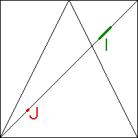

Deterministic Chaos
Mathematical Definition of Chaos
Mixing
: the
stretching and folding
of the tent map will expand any interval until it intersects any other interval.
The animation shows that J iterates to cover part of I.

Click the animation to stop.
Return to
Mathematical Definition of Chaos
.